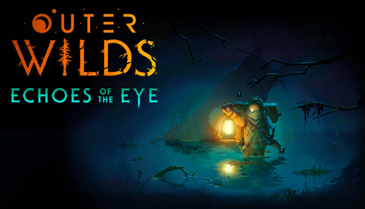
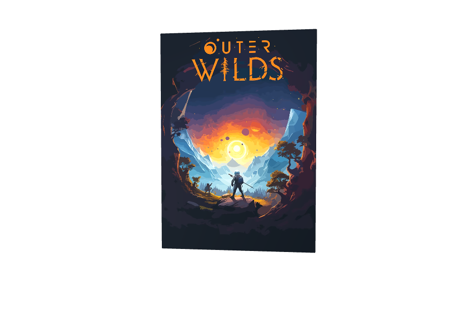

OUTER WILDS :

Game: OUTER WILD
- Developer: Mobius Digital
- Release Year: 2019
- Platform: PC (Windows) Xbox One PlayStation 4 PlayStation 5 Xbox Series X/S Nintendo Switch

The Game Simulates Everything at Once
Unlike many games, nothing “spawns” when you arrive. Every planet, collapse, and event is always happening in real time, even if you’re on the opposite side of the system.
Real Astrophysics Inspired the Mechanics
Concepts like black holes, gravity, and time dilation are simplified but inspired by real science, making exploration feel believable.

It Rewards Curiosity Over Skill
If you're stuck, the solution is usually: “Go somewhere else and learn something new.” That’s by design.
It’s Designed Like a Giant Puzzle Box
Every planet is part of a single interconnected mystery. Clues on one planet often solve puzzles on a completely different one—so the “map” is actually a web of knowledge, not locations.
Shortcuts Exist—but You Discover Them
As you learn the map, you realize there are faster ways to reach places that weren’t obvious at first. The map “unlocks” in your brain, not in the game.